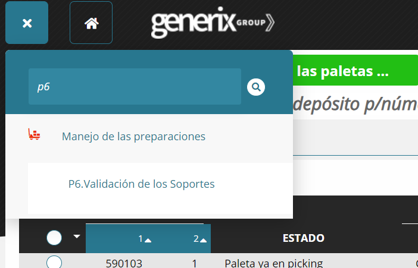
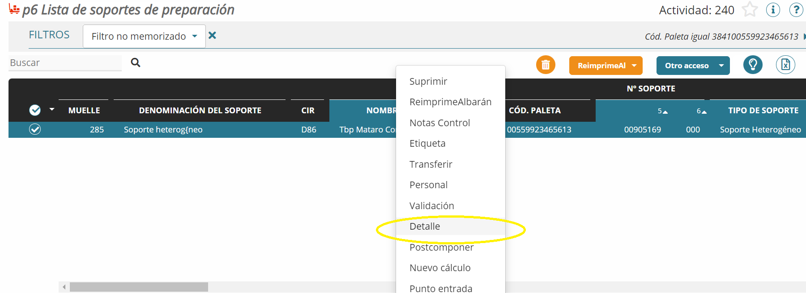
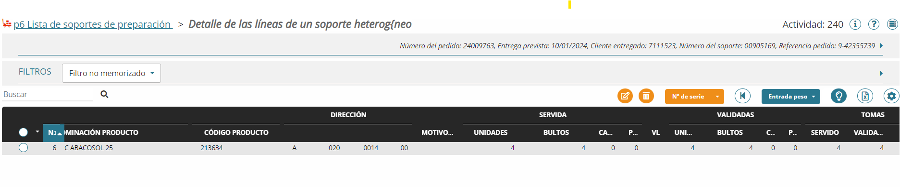

- Entramos en el menú P6 y desplegamos el filtro. 
- en "codigo paleta" entrar el numero que empieza por
38410099...

- contraemos de nuevo el filtro y debe aparecer una linea con el nombre del cliente.Hacemos clic con el botón derecho y seleccionamos "detalle" 
- en detalle nos muestra el codigo y descripcion del articulo, cantidades pedidas, y ubicación en el almacén del articulo 
- Situarse en el menu P6
- desplegamos filtro y seleccionamos VALIDACON SOPORTES
- En filtros seleccionar ETIQUETAS FRUTAS Y VERDURAS o el circuito que queremos preparar
- En muelle seleccionar el muelle (Zona Franca, Badalona...)
- Ordenar por articulo
- Seleccionar un mismo articulo manteniendo presionado CTRL y clicando al mismo tiempo con el mouse.
- Botón derecho del mouse y seleccionar ETIQUETAS, esto imprimirá las etiquetas de envio
- Escribir en la etiqueta el nombre del articulo, la cantidad que pide el cliente y la ubicación en el almacén del mismo articulo
- Menú R9
- seleccionar el filtro GERE95A
- Seleccionar el numero de etiquetas, el programa nos permite entrar un rango de etiquetas, p.ej. del 1 al 100, esto imprimirá 100 etiquetas distintas, si seleccionamos 2 a 100 imprimirá 2 etiquetas iguales 100 veces, es decir el primer valor indica el numero de veces que queremos imprimir una etiqueta y el segundo la cantidad total de etiquetas que queremos.
- Menú E2
- Desplegamos opciones filtro y en FECHA seleccionas la fecha de entrega no la de preparación
- en la opción de entrar el numero de pedido se puede hacer seleccion multiple.
- Para seleccionar multiples pedidos de una misma ruta damos la opción importar, entramos los numeros de pedido que aparecen en el archivo excel que nos han facilitado y clicamos en importar
- Deberiamos tener los distintos pedidos que hay en esa ruta
- Con el botón derecho seleccionamos cambira ruta
- Seleccionamos la fecha de entrega, introducimos la ruta correcta y le damos a confirmar
- Es posible que aparezca un mensaje de error, eso quiere decir que el pedido está bloqueado.
Para desbloquear el pedido hacemos clic derecho del mouse y clicamos SOPORTE, y desbloquear - Ahora podemos repetir los pasos para asignar ruta
- Entramos en el menú PRP, "TABLA PREPARADOR PEDIDOS"
- Usuario
- seleccionar el usuario al que queremos asignar un circuito
- b.d. MODIFICAR
- Seleccionamos CIRCUITO AUTORIZADO
- Clicamos en un icono con el signo +, SELECCIONAR O AÑADIR CIRCUITO
- Seleccionamos el circuito que queremos que le aparezca en la PDA al usuario asignado
CIR circuitos de preparación.
- D86: circuito más habitual, recoge la mayoría de la actividad de Seco.
- DSB: Circuito de Desbordantes, recoge aquellos productos que son especialmente voluminosos y que por lo tanto requieren de una metodología de preparación distinta.
- SMP: Stock de Mercancías Peligrosas, estas mercancías, por su naturaleza (ADR) no pueden estar mezcladas junto a otras mercancías de Seco, por lo que requieren de un circuito especial.
- D88: Circuito de Congelado, recoge todos los productos de la cámara de congelado, y a la que sólo se puede acceder en condiciones de seguridad, por lo tanto sólo preparadores concretos deben ser capaces de preparar pedidos de este circuito.
- D75: Circuito Refrigerado, este circuito contiene los productos que requieren de una temperatura inferior a la normal, y que por lo tanto están ubicados en una cámara aparte, por lo que a nivel operativo se requiere que estén agrupados a nivel del sistema.
- Nos situamos en el menu P6
- Desplegamos el filtro y en codigo paleta introducimos el numero de la anonima
- En la linea que aparece b.d. y seleccionamos detalle
- En el articulo al que queremos modificar el peso b.d. modificar
- Desplegamos el filtro e introducimos en la casilla PESO el peso correcto
- Nos situamos en el menu U7
- Seleccionamos ACTIVIDAD 275
- En PALETA OBSOLETAS b.d. DETALLE
- Seleccionamos los articulas a desmobilizar y con b.d. seleccionamos RETIRAR
- Nos situamos en el menú P1
- Desplegamos el filtro y seleccionamos FECHA DE ENTREGA, actividad 272, y en estado PEDIDO EXTRAIDO
- Al final de la pagina, en el rincón derecho, nos muestra el numero de lineas que son la cantidad de pedidos que se han preparado en esa fecha
- Nos situamos en el menú P6
- en el filtro seleccionas la opción ENRIQUE1
- Filtramos por actividad 272
- clicamos en EXTRAER EXCEL
- Abrimos el archivo .xlc que se ha generado y seleccionamos todas las lineas del fichero y en el recuento final tenemos el numero de soportes que se han preparado.
- Desde la PDA pinchar en la ubicación o generar un codigo de barras en la web: Barcode Generator
- una vez en el manú de cantidad hacer F5 dos veces
- En motivo entrar 8 que es el codigo de faltante
- Entrar la clave para autorizar el faltante
- En el menú "desea procesar lineas faltantes" se debe decir NO
- En la pantalla del monitor SPEC entrar en ZONA USUARIO
- Entar en captura
- Introducir el codigo que nos han pasado via email
- seguir las instrucciones de la pantalla
- Para esta operativa necesitamos abrir dos menus, U6 y P7
- En U6 entramos el código del producto
- Localizamos la linea con la ubicación que no se puede realizar
- b.d. "VISUALIZAR"
- Localizamos el numero de ola y copiamos el numero con ctrl + c
- Pasamos al menú P7
- En el filtro entramos el numero de ola y confirmamos
- En el articulo afectado b.d. DETALLE
- Entramos la ID del operario y confrimamos
- D86: circuito más habitual, recoge la mayoría de la actividad de Seco.
- DSB: Circuito de Desbordantes, recoge aquellos productos que son especialmente voluminosos y que por lo tanto requieren de una metodología de preparación distinta.
- SMP: Stock de Mercancías Peligrosas, estas mercancías, por su naturaleza (ADR) no pueden estar mezcladas junto a otras mercancías de Seco, por lo que requieren de un circuito especial.
- D88: Circuito de Congelado, recoge todos los productos de la cámara de congelado, y a la que sólo se puede acceder en condiciones de seguridad, por lo tanto sólo preparadores concretos deben ser capaces de preparar pedidos de este circuito.
- D75: Circuito Refrigerado, este circuito contiene los productos que requieren de una temperatura inferior a la normal, y que por lo tanto están ubicados en una cámara aparte, por lo que a nivel operativo se requiere que estén agrupados a nivel del sistema.
- 59 - Castellón
- 54 - Tarragona
- 22 - Barberá
- 10 - Palma de Mallorca
- 9 - Zaragoza
- 7 - Badalona
- 2 - Zona Franca
Pendiente
- Nos situamos en el menú U6 Repertorio de las paletas del depósito p/núme...
- Desplegamos los filtros y en la sección "DIRECCION"
- En esta seccion debemos rellenar los cuatro campos
- el primero pertenece a la zona p. ejem. U, F,
- El segundo campo pertenece al bloque de estanterias
- el tercer campo es la columna de las estanterias
- El cuarto pertenece a la altura de la estanteria, 00 es el hueco mas bajo y 01 superior
Si solo rellenamos el primer campo, la letra, el sistema nos muestra todas las ubicaciones de ese
circuito,
A medida que vamos rellenando los campos el sistema va acotando la busqueda.